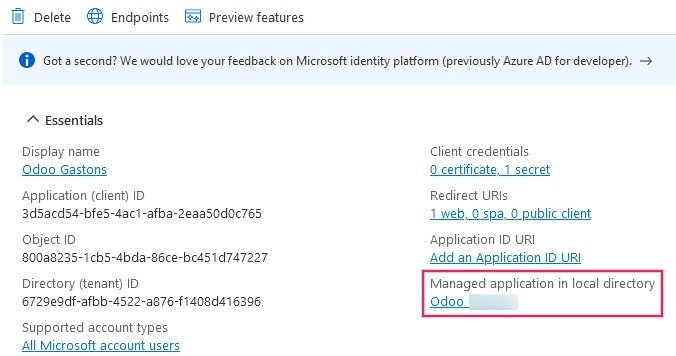
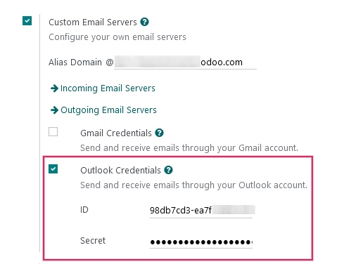
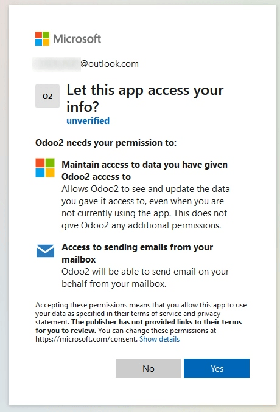

Conecte Microsoft Outlook 365 a Odoo con Azure OAuth¶
Odoo es compatible con el Azure OAuth de Microsoft para Microsoft 365. Para enviar y recibir correos seguros con un dominio personalizado, solo necesita realizar algunos ajustes en la plataforma de Azure y en el backend de su base de datos de Odoo. Esta configuración funciona ya sea con una dirección de correo personal o una dirección creada con un dominio personalizado.
Configuración en el portal de Microsoft Azure¶
Crear una nueva aplicación¶
Primero, vaya al portal de Microsoft Azure. Inicie sesión con la cuenta de Microsoft Outlook Office 365 si tiene una, de lo contrario inicie sesión con su cuenta personal de Microsoft. Necesitará un usuario con acceso de administrador a los ajustes de Azure para conecta y configurar los siguientes ajustes. Luego, vaya a la sección llamada :guilabel:`Gestionar ID de Microsoft Entra (antes *Directorio activo de Azure).
Ahora, haga clic en Agregar (+) en la parte superior del menú y seleccione Registro de aplicación. En la pantalla de Registre una aplicación, cambie el nombre en Nombre a Odoo o algo que pueda reconocer. En la sección Tipos de cuentas compatibles, seleccione guilabel:Cuentas en cualquier directorio organizacional (directorio Microsoft Entra ID - Multitenant) y cuentas de Microsoft personales (por ejemplo, Skype, Xbox).
En la sección Redirect URL (redericción de URL) seleccione la plataforma Web y después ponga https://<odoo base url>/microsoft_outlook/confirm en el campo URL. La URL base de Odoo es el dominio canónico en el que su instancia de Odoo puede ser contactada en el campo URL.
Example
mydatabase.odoo.com, donde mydatabase es el prefijo del subdominio de la base de datos, asumiendo que está alojada en Odoo.com.
Una vez que se agregó la URL al campo, registre la aplicación para crearla.
Permisos de la API¶
Ahora tiene que configurar los permisos del API. Odoo necesita permisos API para poder leer (IMAP) y enviar (SMTP) correos en la configuración de Microsoft 365. Primero, haga clic en el enlace permisos API que se encuentra en la barra izquierda del menú. Después, haga clic en el botón (+) Add a Permission (agregar un permiso) y seleccione Microsoft Graph (gráfica de Microsoft) en Commonly Used Microsoft APIs (API de Microsoft que más se usan).
En la barra de búsqueda, busque Delegated permissions (permisos delegados) y haga clic en Add permissions (agregar permisos) para cada uno:
SMTP.Send
IMAP.AccessAsUser.All
Nota
El permiso User.Read se agregará de manera automática.

Asignación de usuarios y grupos¶
Después de agregar los permisos API regrese al Overview (resumen) de la aplicación hasta arriba del menú de la barra lateral izquierda.
Ahora, agregue usuarios a esta aplicación. En la tabla de resumen Essentials (esenciales) haga clic en el enlace llamado Managed Application in Local Directory (aplicación gestionada en el directorio local) o la última opción en el lado derecho inferior de la tabla.
En el menú del lado izquierdo, seleccione Users and Groups (usuarios y grupos). Después, haga clic en (+) Add User/Group (agregar un usuario o grupo). Dependiendo de la cuenta podrá agregar ya sea un grupo y un usuario o solo un usuario. En las cuentas personales solo es posible agregar usuarios.
En usuarios o grupos, haga clic en None Selected (ninguno seleccionado) y agrege los usuarios o el grupo de usuarios que enviará correos desde la cuenta de Microsoft en Odoo. Agregue a los usuarios o grupos, haga clic en guilabel:Select (seleccionar) y después Assign (asígnelos) a la aplicación.
Creación de credenciales¶
Ya que configuró la aplicación de Microsoft Azure, ahora necesita crear credenciales para la configuración en Odoo. Estas credenciales incluyen Client ID y Client Secret. Para empezar, podrá copiar el Client ID desde la página Overview de la aplicación. El Client ID o el Application ID se encuentra bajo Display Name en la parte de Essentials del resumen de la aplicación.

Ahora tiene que obtener el Client Secret Value (valor secreto del cliente). Para obtener este valor haga clic en el botón Certificates & Secrets (certificados y secretos) que se encuentra en el menú de la barra izquierda. Ahora tendrá que producir un Client Secret (secreto de cliente) y para hacerlo tiene que hacer clic en el botón (+) New Client Secret (nuevo secreto del cliente).
Aparecerá una ventana en la derecha con el botón Add a client secret (agregar un secreto de cliente). En Description (descripción) escriba Odoo Fetchmail o algo que usted pueda reconocer y después agregue una expiration date (fecha de caducidad).
Importante
Si el primer secreto caduca, tendrá que configurar un secreto de cliente nuevo. Si esto ocurre, es posible que el servicio se interrumpa, así que configure esta fecha para que sea la fecha más lejana posible.
Después de que haya ingresado estos dos valores haga clic en Add (agregar). Así se crearán un Client Secret Value (valor secreto del cliente) y un ID secreto. Es importante copiar el Value (valor) o el Client Secret Value (valor secreto del cliente) en un bloc de notas ya que estos valores se encriptarán una vez que deje esta página. No necesita el Secret ID (ID secreto).

Si siguió todos los pasos, tendrá la información siguiente disponible para agregarla a Odoo:
Un ID de cliente (Client ID o Application ID)
Un secreto del cliente (Value o Client Secret Value)
Este es el final de la configuración en el portal de Microsoft Azure.
Configuración en Odoo¶
Ingresar credenciales de Microsoft Outlook.¶
Primero, abra la base de datos de Odoo y vaya al módulo Aplicaciones. Después, quite el filtro Aplicaciones de la barra de búsqueda y escriba Outlook. Después de eso, instale el módulo llamado Microsoft Outlook.
Vaya a y asegúrese de que el botón Servidores personalizados de correo electrónico, que se encuentra en la sección Conversaciones esté activado. De esta manera aparecerá una nueva opción llamada credenciales de Outlook.
Guarde el progreso.
Después, copie y pegue el Client ID (ID de la aplicación) y el Client Secret (valor secreto del cliente) en los campos respectivos. Al finalizar, guarde los cambios.
Configurar servidor de correos electrónicos salientes¶
En la página de los ajustes generales vaya a la parte de Servidores personalizados de correo electrónico y haga clic en el enlace Servidores de correo saliente para configurar su cuenta de Microsoft.
Cree un nuevo servidor de correo electrónico y marque la casilla de Outlook. Ahora, llene el nombre (puede ser lo que sea) y el nombre se usuario del correo electrónico de Microsoft Outlook.
Si el campo Filtro «de» está vacío, ingrese ya sea un dominio o una dirección de correo electrónico.
Después, haga clic en Conecte su cuenta de Outlook.
Se abrirá una nueva ventana de Microsoft para completar el proceso de autorización. Seleccione la misma dirección de correo electrónico que está configurando en Odoo.
Haga clic en sí para permitir que Odoo acceda a su cuenta de Microsoft. Después, la página lo redireccionará de regreso al Servidor de correos salientes que acaba de crear. La configuración carga automáticamente el token en Odoo y también aparecerá una etiqueta verde llamada Token de Outlook válido.

Ahora haga clic en probar conexión, debería aparecer un mensaje de confirmación. Ahora, la base de datos de Odoo puede enviar correos seguros a través de Microsoft Outlook con la ayuda de la autenticación OAuth.
Configuración con un solo servidor de correos electrónicos salientes¶
Configurar un solo servidor de salida es de las opciones más simples disponibles para Microsoft Azure y no requiere derechos de acceso tan extensos para los usuarios de la base de datos.
Debe usar una dirección de correo electrónico para enviar correos a todos los usuarios dentro de la base de datos. Por ejemplo, se puede estructurar con un alias de notificaciones (notificaciones@ejemplo.com) o un alias de contacto alias (contacot@ejemplo.com). Esta dirección debe estar establecida como Filtrado DESDE en el servidor. También debe coincidir con la combinación clave {mail.default.from}@{mail.catchall.domain} en los parámetros del sistema.
Ver también
Puede obtener más información acerca del filtro desde, consulte: Utilizar una dirección de correo electrónico «De» predeterminada.
Nota
Puede acceder a los Parámetros del sistema activando el modo desarrollador en .
Al usar esta configuración, cada correo que se envíe desde la base de datos, utilizará la dirección establecida en el buzón de notificación. Sin embargo, debe tener en cuenta que el nombre del remitente aparecerá pero su dirección de correo cambiará.

Example
Configuración para un solo servidor de correos salientes:
Nombre de usuario (inicio de sesión) del servidor de correo electrónico saliente =
notificaciones@ejemplo.comServidor de correo electrónico de salida FROM Filtering = `notificaciones@ejemplo.com
mail.catchall.domainen los parámetros del sistema =ejemplo.commail.default.fromen los parámetros del sistema =notificaciones
Configuración específica del usuario (varios usuarios)¶
Además de un servidor genérico para correo electrónico, es posible configurar servidores de correo individuales para para usuarios dentro de una base de datos. Estas direcciones de correo se deben configurar como FROM Filtering en cada servidor individual para que esta configuración funcione.
Esta es la configuración más difícil de las dos configuraciones con Microsoft Azure ya que requiere que configuremos servidores de correo para cada usuario, de esta manera tendrán derechos de acceso a los ajustes y se podrá establecer una conexión al servidor del correo.
Configurar¶
Tendrá que configurar un servidor diferente para cada usuario. Debe configurar el filtro FROM Filtering de tal manera que solo se envíen correos de ese usuario desde ese servidor. En otras palabras, tiene que configurar el servidor de tal manera que solo el usuario que tenga la misma dirección de correo que el filtro FROM Filtering pueda usar el servidor.
Ver también
Puede obtener más información acerca del filtro desde, consulte: Utilizar una dirección de correo electrónico «De» predeterminada.
Debe configurar un servidor de respaldo para permitir que se envíen notificaciones. El FROM Filtering de este servidor debe tener el valor de {mail.default.from}@{mail.catchall.domain}.
Nota
Puede acceder a los Parámetros del sistema activando el modo desarrollador en .
Importante
La configuración para este servidor transaccional puede funcionar junto a un servidor de correo electrónico saliente. El FROM Filtering para el servidor de correo electrónico masivo puede mantenerse vacío, pero es necesario agregarlo en los ajustes de la aplicación Marketing por correo electrónico.
Ver también
Para más información sobre cómo configurar un servidor de correo electrónico masivo, visite Configurar distintos servidores dedicados para correos masivos y transaccionales.
Example
Configuración de un servidor de correo electrónico de varios usuarios:
- Bandeja de entrada del usuario #1
Servidor de correo electrónico de salida #1 nombre de usuario (inicio de sesión) =
john@ejemplo.comServidor de correo electrónico de salida #1 FROM Filtering =
john@ejemplo.com
- Bandeja de entrada del usuario #2
Servidor de correo electrónico saliente #2 nombre de usuario (inicio de sesión) =
jane@ejemplo.comServidor electrónico de salida #2 FROM Filtering =
jane@ejemplo.com
- Notificaciones de la bandeja de entrada
Servidor de correo electrónico de salida #3 nombre de usuario (inicio de sesión) =
notifications@ejemplo.comServidor de correo electrónico de salida #3 FROM Filtering =
notificaciones@ejemplo.com
- Parámetros del sistema
mail.catchall.domainen los parámetros del sistema =ejemplo.commail.default.fromen los parámetros del sistema =notificaciones
Configure un servidor de correo electrónico de llegada¶
La cuenta de llegada se debe configurar casi igual al servidor de salida. Vaya al menú técnico y en Servidores de correo entrante cree una nueva configuración. Seleccione el botón junto a Autenticación OAuth de Outlook e inserte el nombre de usuario de Microsoft Outlook, después, haga clic en Conecte su cuenta de Outlook. Recibirá un aviso que dirá Token de Outlook válido, por lo que ahora solo tiene que confirmar y probar la cuenta, que ya debería estar lista para recibir correos en la base de datos de Odoo.